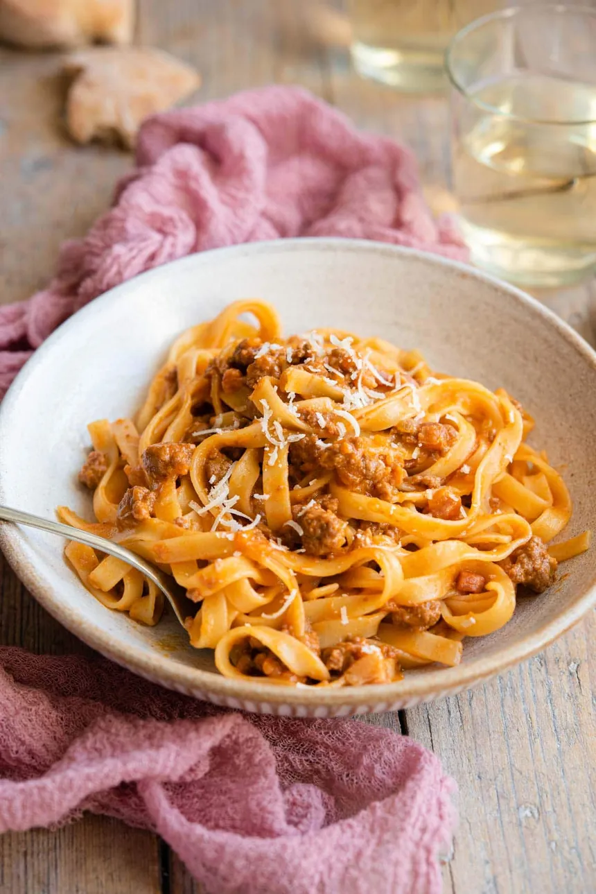

Ragù alla Bolognese

This page contains the best recipe of Ragù alla Bolognese that i developed through the years of experience in the kitchen. Hope you like it!
For this recipe you will need:
- Onion
- Celery
- Carrot
- Bacon
- Meat
- Beef Stock
- Salt
- Passata
- Red Wine (Good one)
- First thing you need to do is the Mise en Place, which consists in preparing all the ingredients and tools you will need in order to prepare this recipe in the most optimized way.
- To start the Mise en Place, you can cut the mirepoix (celery, carrots and onion) into little cubes and putting it aside.
- Next thing is cutting the bacon in medium sized cubes and putting it aside either.
- Turn up the heat and wait until the pan is hot enough.
- Put in the bacon first so it releases it's fat in the pan and stir it until creespy.
- Throw the mirepoix in the pan and start mixing until it's a little roasted.
- Take everything off the pan and put in the meat. Cook it until you can see the 'found' creating in the bottom of the pan.
- Next thing is you put the red wine so we can scrape the bottom of the pan and release the 'found' flavor in our sauce.
- Add the passata, beef stock and cook it for about 3 hours.